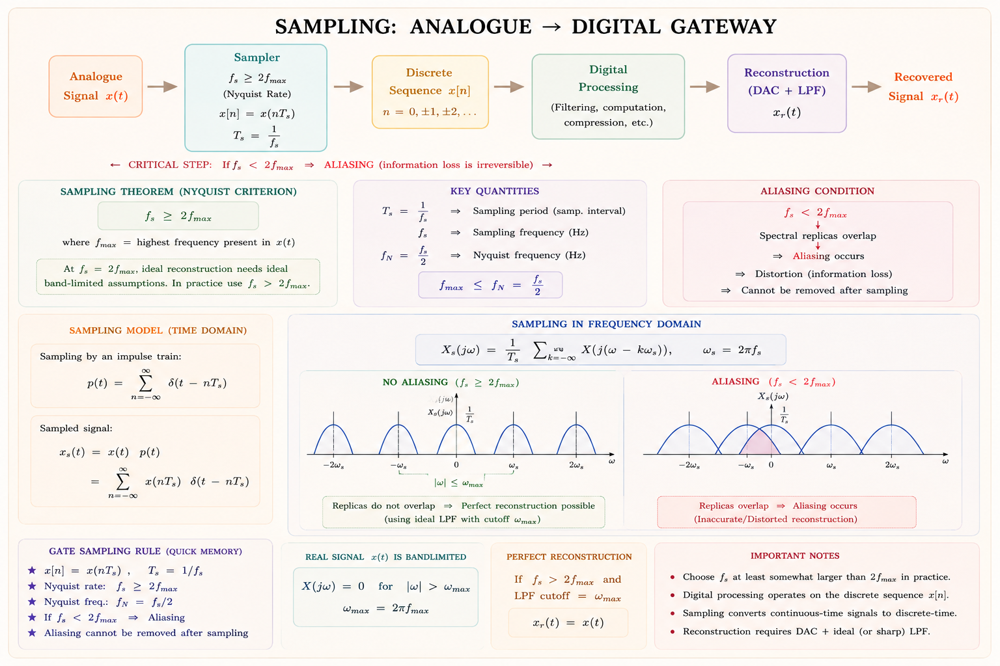
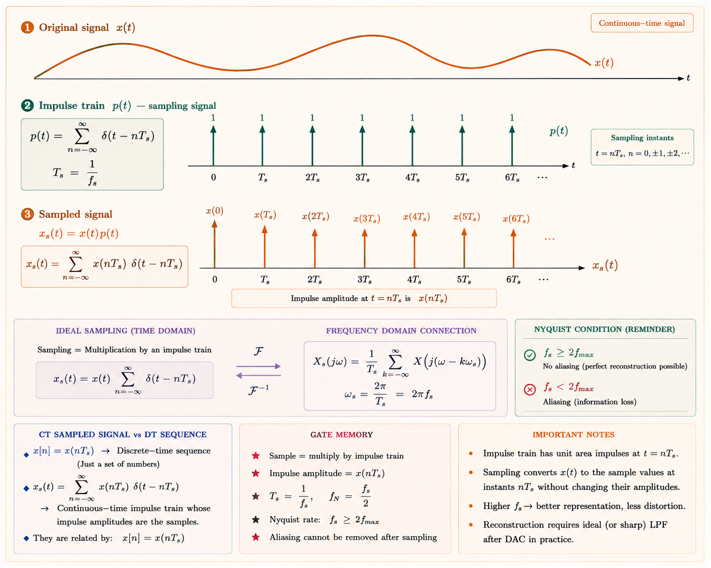
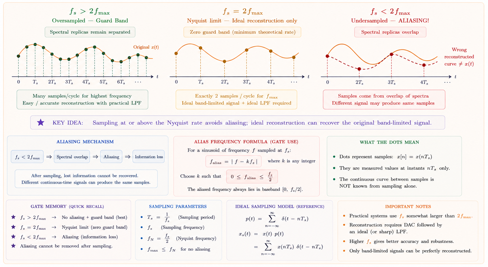
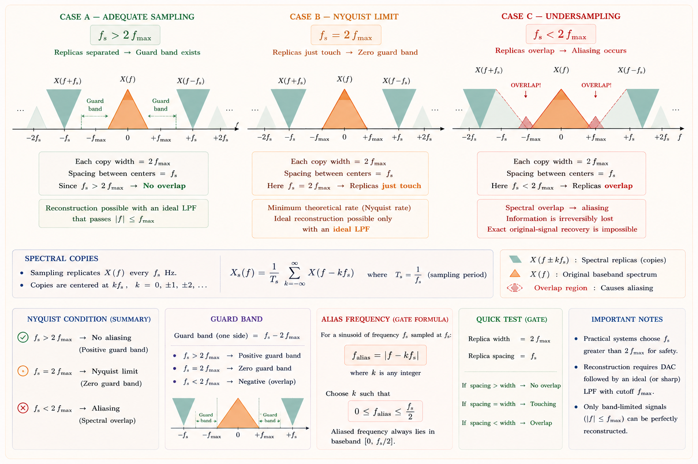
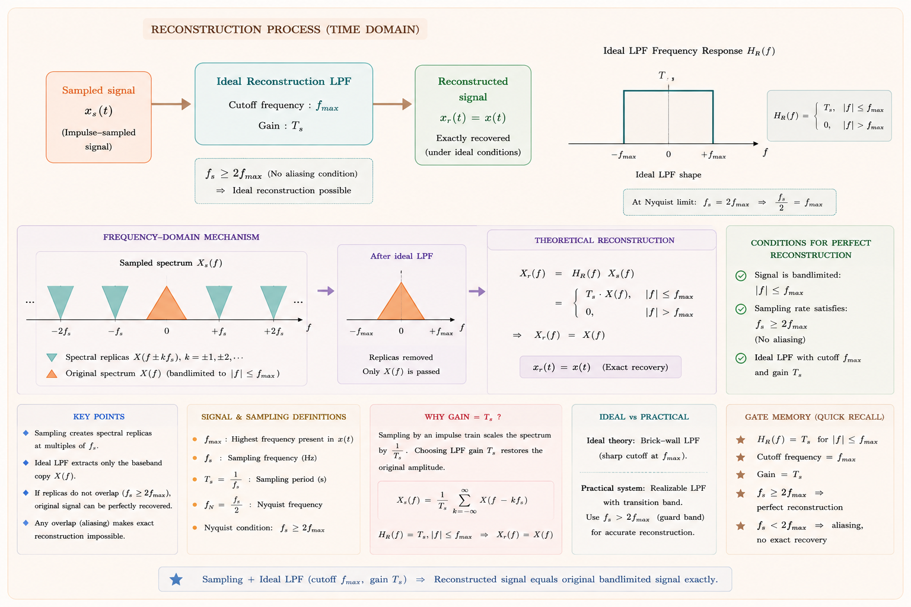
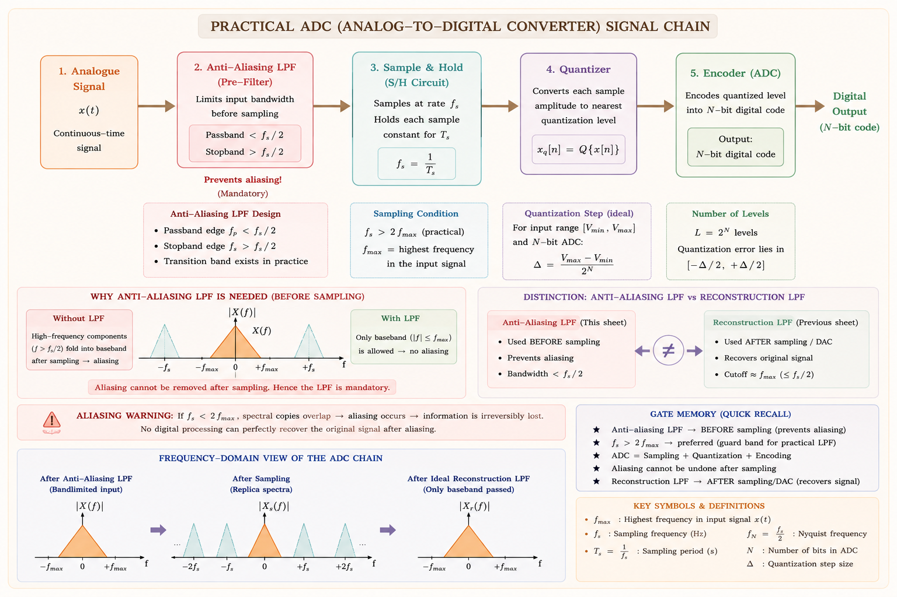

The bridge between the continuous and digital worlds. From Nyquist's foundational theorem to aliasing traps and perfect reconstruction — built from first principles for GATE, IES, and PSU exams.
Every piece of music you stream, every phone call you make, every ECG your doctor reads — all of it was once an analogue continuous-time signal that had to be converted into numbers before a computer could process it. Sampling is the act of converting a continuous-time signal into a discrete-time sequence. The Sampling Theorem answers the single most important question in this conversion: how often must we take samples so we don't lose any information?[1]
Computers work with numbers — finite, discrete quantities. The physical world gives us voltages, pressures, and temperatures that vary continuously. Sampling is the legal passport that allows an analogue signal to enter the digital world. The Sampling Theorem guarantees that this journey is lossless — if done correctly.

Fig. 1 — The sampling step is where analogue meets digital. Nyquist's condition governs this gateway.
Sampling theory sits at the heart of: DSP (Digital Signal Processing), audio engineering (CD, MP3, Bluetooth), telecommunications (4G, 5G), medical imaging (MRI, ECG digitizers), radar and sonar systems, and every analogue-to-digital converter (ADC) ever made.
Imagine you are trying to describe the motion of a pendulum to someone over the phone. You look at it every second and say the angle. If the pendulum is slow, your one-second snapshots capture it perfectly. If the pendulum is very fast, you might report it going left when it was actually already on the way back — that is aliasing in a nutshell.
In the ideal mathematical model, a continuous-time signal \(x(t)\) is multiplied by an impulse train (also called a Dirac comb) \(p(t)\):[1]
where \(T_s = 1/f_s\) is the sampling period and \(f_s\) is the sampling frequency in Hz. The sampled signal is:
Each impulse in the train "picks up" the value of \(x(t)\) at that exact instant. The impulse at \(t = nT_s\) has a weight (area) equal to \(x(nT_s)\). So the sampled signal is a sequence of weighted impulses spaced \(T_s\) seconds apart. Each weight is exactly one sample value.

Fig. 2 — Ideal impulse sampling: the original signal ① is multiplied by an impulse train ② to produce weighted impulses ③, each carrying the signal's amplitude at that instant.
Ref: Oppenheim & Schafer, Discrete-Time Signal Processing, 3rd ed., Chapter 4.
| Type | Description | Mathematical Model | Used In |
|---|---|---|---|
| Ideal (Impulse) | Instantaneous snapshot; infinite resolution | Multiply by Dirac comb \(\delta\)-train | Theoretical analysis, GATE derivations |
| Natural Sampling | Top of sample follows signal during pulse width \(\tau\) | Multiply by rectangular pulse train | PAM systems, older multiplexers |
| Flat-Top (S&H) | Sample held constant for full \(T_s\); causes aperture distortion | Convolution with rect pulse after ideal sampling | All real ADCs — sample-and-hold circuits |
A bandlimited signal \(x(t)\) with no spectral components above \(f_m\) Hz can be perfectly reconstructed from its uniformly-spaced samples taken at a rate \(f_s \geq 2f_m\) samples per second.
This theorem was independently developed by Harry Nyquist (1928) who identified the minimum rate, and Claude Shannon (1949) who provided the complete mathematical proof. It is the bedrock result of the entire field of digital signal processing.[1][2]
A sinusoid at frequency \(f_m\) Hz makes \(f_m\) complete cycles every second. To unambiguously capture the shape of even one cycle, you need at minimum two samples per cycle — one to capture the rising part, one to capture the falling part. Therefore you need \(2f_m\) samples per second. This is not a coincidence — it falls directly from the Fourier analysis of the sampled signal's spectrum, as we will see in the next section.

Fig. 3 — Three sampling scenarios. Only adequate sampling rate (≥ 2f_m) preserves the original waveform.
Because the highest-frequency component needs two points per cycle to define it — one peak and one trough. Fewer than two points and you cannot distinguish a fast oscillation from a slow one. More than two gives redundancy but is not required. The theoretical minimum is exactly two samples per cycle of the highest frequency present.
At exactly \(f_s = 2f_m\), reconstruction is theoretically possible but requires a perfect ideal low-pass filter with an infinitely sharp cut-off at exactly \(f_m\). No such filter exists in practice. Engineers therefore always choose \(f_s\) somewhat greater than \(2f_m\). The audio CD standard uses \(f_s = 44.1\) kHz for audio up to \(f_m \approx 20\) kHz — that is \(2.2 \times\) the Nyquist rate.
To truly understand the Nyquist theorem, we must look at what happens in the frequency domain. This is where the real insight lies.[1]
The impulse train \(p(t)\) with period \(T_s\) has a Fourier transform that is also an impulse train, but in the frequency domain with spacing \(f_s = 1/T_s\):
Since \(x_s(t) = x(t) \cdot p(t)\), multiplication in time corresponds to convolution in frequency. The spectrum of the sampled signal is:
Sampling in time causes the spectrum of the original signal to repeat periodically in frequency, with repetitions at every multiple of \(f_s\). The original spectrum \(X(f)\) appears centred at \(f = 0\), and then copies appear at \(f = \pm f_s, \pm 2f_s, \pm 3f_s, \ldots\) These copies are called spectral replicas or images.

Fig. 4 — Frequency domain view of sampling. When f_s > 2f_m (Case A) the spectral copies are separate; reconstruction is possible with a simple LPF. When f_s < 2f_m (Case B) copies overlap — aliasing is irreversible.
Ref: Oppenheim & Willsky, Signals and Systems, 2nd ed., Section 7.3.
When the sampling rate is too low, a high-frequency signal masquerades as a low-frequency signal in the sampled data. This imposter is called an alias. The word comes from the Latin for "otherwise named" — the signal appears under a false identity.[2]
Once aliasing occurs, the original signal cannot be recovered no matter how sophisticated the reconstruction algorithm. This makes it the most critical error in sampling — not a small distortion, but a fundamental loss of information. Prevention (adequate f_s) is the only cure.
When a signal at frequency \(f\) is sampled at rate \(f_s\), it can appear as a frequency \(f_a\) (its alias) given by:
Practically: find the integer \(k\) such that \(f_a = |f - k f_s|\) falls in the range \([0, f_s/2]\). That is the alias.
Subtract multiples of \(f_s\) from the signal frequency \(f\) until the result falls between 0 and \(f_s/2\). If it falls between \(f_s/2\) and \(f_s\), reflect it: \(f_a = f_s - f'\). The result is the alias frequency that the sampler "sees."
Given the sampled signal \(X_s(f)\) whose spectrum consists of shifted copies of \(X(f)\), reconstruction of the original signal \(x(t)\) is straightforward in theory: pass \(x_s(t)\) through an ideal low-pass filter (LPF) that passes only the central copy (the original spectrum) and blocks all the spectral images.[1]
The gain \(T_s\) compensates for the \(1/T_s = f_s\) scaling factor introduced by the sampling formula. After filtering:
The impulse response of the ideal LPF is a sinc function. Convolution of \(x_s(t)\) with this sinc gives us the reconstruction formula — the Whittaker-Shannon interpolation formula:[1]
where \(\text{sinc}(u) = \frac{\sin(\pi u)}{\pi u}\). Each sample \(x(nT_s)\) contributes a scaled and time-shifted sinc function. All these sinc pulses add together to produce the perfect continuous-time reconstruction. This is why the sinc function is called the ideal interpolation kernel.

Fig. 5 — Reconstruction process: the sampled signal passes through an ideal LPF to recover the original x(t). The ideal LPF has rectangular shape in frequency and sinc shape in time.
| Ideal LPF Property | Why It's Impossible | Practical Solution |
|---|---|---|
| Perfectly rectangular frequency response | Requires infinite order filter; infinite time response | Butterworth, Chebyshev, Elliptic filters with steep but finite roll-off |
| Zero transition band width | Gibbs phenomenon; infinite coefficients in FIR design | Use guard band: design f_s slightly above 2f_m |
| Non-causal (sinc impulse response) | Sinc extends to \(-\infty\) — requires future samples | Windowed FIR filters with finite delay; IIR approximations |
| Unity gain in passband only | Real filters have passband ripple and stopband leakage | Anti-aliasing filters specified for passband and stopband tolerances |
Before any real ADC samples the signal, an analogue anti-aliasing low-pass filter removes all frequency components above \(f_s/2\). This ensures aliasing cannot occur — there are no high-frequency components left to fold back into the baseband.[3]

Fig. 6 — Practical ADC chain: analogue anti-aliasing LPF → sample-and-hold → quantiser. The anti-aliasing filter is mandatory.
In real sample-and-hold circuits, the sample is held constant for the entire sampling period \(T_s\) rather than being instantaneous. This flat-top sampling introduces an aperture effect — the spectrum gets multiplied by a sinc envelope:
where \(\tau\) is the hold time (usually \(\approx T_s\)). The sinc envelope causes high-frequency droop. This is corrected by an aperture equaliser (an analogue or digital filter with inverse-sinc characteristic).
Modern audio ADCs sample at \(4\times\) to \(64\times\) the Nyquist rate (oversampling). Benefits: the relaxed anti-aliasing filter requirement (wide guard band), and quantisation noise is spread over a wider band so less falls in the signal band — improving effective bit resolution by \(3\) dB per octave of oversampling (0.5 bit per doubling of sample rate).
Telephone speech: \(f_m = 4\) kHz → \(f_s = 8\) kHz (ITU G.711). Audio CD: \(f_m \approx 20\) kHz → \(f_s = 44.1\) kHz. Professional audio: \(f_s = 96\) kHz or \(192\) kHz. ECG monitor: \(f_m \approx 100\) Hz → \(f_s = 250\text{–}1000\) Hz. These are all well above Nyquist rate for real-world robustness.
| Topic | Probability | What to Master |
|---|---|---|
| Nyquist Rate Calculation | 🟢 HIGH | Find \(f_m\) from a given \(x(t)\) → state minimum \(f_s\). Most common one-mark question. |
| Aliasing — Finding Alias Frequency | 🟢 HIGH | Given \(f\) and \(f_s\), compute \(f_a = |f - k \cdot f_s|\) for appropriate \(k\). Two-mark numerical. |
| Spectrum After Sampling (frequency domain sketch) | 🟢 HIGH | Draw or identify \(X_s(f)\) — where copies are located, whether they overlap. |
| Reconstruction Filter Bandwidth | 🟡 MEDIUM | State that the ideal LPF must have cutoff at \(f_s/2\) and gain \(T_s\). |
| Flat-Top Sampling / Aperture Effect | 🟡 MEDIUM | Understand sinc distortion and the need for an aperture equaliser. |
| Oversampling Benefits | 🔴 LOW | 3 dB improvement per octave; noise shaping in \(\Delta\Sigma\) ADCs. |
Solution: The frequencies present are 100 Hz and 200 Hz. The maximum frequency \(f_m = 200\) Hz. Nyquist rate \(= 2 \times 200 = 400\) samples/sec. The given rate of 250 < 400, so aliasing does occur.
Alias of 200 Hz at f_s = 250: \(f_a = |200 - 250| = 50\) Hz. The 200 Hz component aliases to 50 Hz.
Solution: f_s = 15 kHz, Nyquist rate = 20 kHz > 15 kHz → undersampling → aliasing.
Alias of 8 kHz: \(f_a = |8000 - 15000| = 7000\) Hz \(= 7\) kHz. Check: 7 kHz < 15/2 = 7.5 kHz ✓ (within Nyquist band). So the 8 kHz tone appears as 7 kHz.
Answer: The sampling rate must equal or exceed twice the highest frequency in the signal (\(f_s \geq 2f_m\)), AND a low-pass filter with cutoff at \(f_s/2\) must be used in reconstruction.
Concept: For a bandpass signal occupying \([f_L, f_H]\) with bandwidth \(B = f_H - f_L\), the minimum sampling rate is \(f_s = 2B\) (not \(2f_H\)!), provided \(f_H/B\) is an integer (or we use the appropriate bandpass sampling theorem).[2]
Here: \(B = 6000 - 4000 = 2000\) Hz. Minimum \(f_s = 2B = 4000\) Hz (if bandpass sampling theorem applies). If using conventional Nyquist for baseband: \(f_s = 2 \times 6000 = 12\) kHz.
If the question says "minimum sampling rate for bandpass signal," it expects the bandpass sampling theorem answer: \(f_s = 2B\). If it asks about the standard theorem applied naively: \(f_s = 2f_H\). Read carefully.
Always find the maximum frequency component, not the average. The Nyquist rate is set by the fastest oscillation in the signal.
The 900 Hz tone will appear indistinguishable from a 200 Hz tone in the sampled data — a classic aliasing scenario.
Oversampling by a factor of 2 (here \(f_s = 4W\) vs minimum \(2W\)) creates a guard band of \(W\) Hz on each side — this is why practical systems oversample: relaxed filter requirements.
For \(x(t) = \cos(100\pi t) + \cos(500\pi t)\), some students compute Nyquist rate as \(2 \times 50 = 100\) Hz (using the first component). Correct: use the highest frequency \(f_m = 250\) Hz → \(f_s = 500\) Hz.
Nyquist Rate = \(2f_m\) = the minimum sampling frequency required. Nyquist Frequency = \(f_s/2\) = the maximum frequency that can be represented given a sampling rate \(f_s\). They are different quantities! Nyquist frequency is half the Nyquist rate when exactly at the minimum.
Students sometimes think a better reconstruction filter can fix aliasing. It cannot. Once two frequencies occupy the same spectral position, they are indistinguishable — no filter can separate them. The anti-aliasing filter must act before sampling.
For a bandpass signal occupying 4–6 kHz, many students write Nyquist rate = 2 × 6000 = 12 kHz. While conservative and safe, the minimum by the bandpass sampling theorem is only 2B = 4 kHz. GATE often asks for the minimum — know both.
The ideal LPF for reconstruction has gain \(T_s = 1/f_s\), not unity. Without this factor, the reconstructed signal is scaled by \(1/f_s\). In derivation questions, always include this scaling factor.
Type any question on sampling, aliasing, reconstruction, or Nyquist theorem. Get a step-by-step GATE-focused answer.
\( f_s \geq 2 f_m \). Bandlimited signal can be perfectly recovered from samples taken at \( \geq \) Nyquist rate. Shannon 1949 — complete proof. Nyquist 1928 — identified minimum rate.
\( X_s(f) = f_s \sum X(f - k f_s) \). Spectrum of sampled signal = copies of \( X(f) \) at multiples of \( f_s \). Copies overlap if \( f_s < 2 f_m \) → aliasing.
\( f_a = |f - k f_s| \) (k to bring into \( [0, f_s/2] \)). Irreversible information loss. Caused by undersampling. Prevented by anti-aliasing LPF before ADC.
Ideal LPF: \( H(f) = T_s \) for \( |f| \leq f_s/2 \). Time domain: sinc interpolation. \( x(t) = \sum x(n T_s) \text{sinc}\left(\frac{t - n T_s}{T_s}\right) \). Ideal filter is physically unrealisable.
Anti-aliasing LPF → sample-and-hold → ADC. Aperture effect: sinc distortion from flat-top hold. Oversampling: easier filter, lower quantisation noise. CD: 44.1 kHz. Phone: 8 kHz.
Signal occupies \( [f_L, f_H] \), BW \( = B = f_H - f_L \). Minimum \( f_s = 2B \) (not \( 2f_H \)). Saves ADC cost. Used in radio receivers, OFDM, radar.
Discrete-Time Fourier Transform (DTFT) and Discrete Fourier Transform (DFT) — definitions, properties, circular convolution, the FFT algorithm, and spectral leakage with complete GATE and IES analysis.
All technical content is derived from the following standard textbooks and learning resources. All explanations, derivations, diagrams and examples are original to Aarova AI.